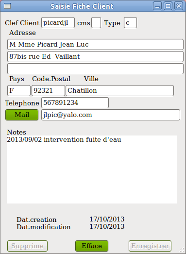

|  |
==
Clef Client (8 caractères maximum) La saisie d'une clef et sa validation provoque: 1_ Affichage de la fiche mémorisée avec cette clef. 2_ Rien. C'est à dire que la fiche est inchangée. La clef n'existe pas. Soit c'est une erreur de frappe, soit on s'apprête à créer une fiche. Pour une création, saisir 'c' dans 'cms' avant de commencer à saisir. Si la fenêtre 'Liste Client' est activée, les clients correspondants à la saisie sont listés. == cms ( création, modification, suppression) valeurs acceptées: ' ' (blanc), 'c', 'm', 's' ' ' (blanc) = consultation de la fiche. 's' = suppression de la fiche active le bouton 'Supprime', un clic sur ce bouton supprime définitivement la fiche. 'm' = modification active le bouton 'Enregistrer', un clic sur ce bouton enregistre les modifications saisies ( sauf Clef Client). 'c' = création d'une fiche active le bouton 'Enregistrer' et efface la fiche. L'utilisateur choisit la clef (ou code) de son client tel qu'il pourra par la suite la retrouver facilement. conseil: coder avec lettres minuscules sans accent, chiffres, tiret sans espaces. éviter tous les autres caractères: ';', '%' , etc coder avec 2 caractères au minimum. |
||||
| Modification de clef Recréer une fiche avec la bonne clef et supprimer l'ancienne. Informations de la fiche Aucune information n'est obligatoire mis à part la clef. == Type (1 caractère) zone libre pour éventuellement différencier les fiches exemple clients 'c', fournisseurs 'f', etc ==Adresse 3 lignes de 50 caractères. ==Pays 4 caractères. Prendre soin de coder toujours de la même manière un pays . Ne pas coder une fois 'JAP' et une autre 'jap', ou 'GB' et 'UK'. ==Code Postal 7 caractères ==Ville 29 caractères ==Téléphone 17 caractères 38 caractères ==Bouton mail active la messagerie de votre machine ==Notes (510 caractères maximum) Zones libres pour mémoriser notes, remarques, factures, devis, etc conseil: le curseur se place en début. taper 'retour' pour libérer la première ligne afin que la dernière note soit au dessus. =========== Liste Clients
|
|||||